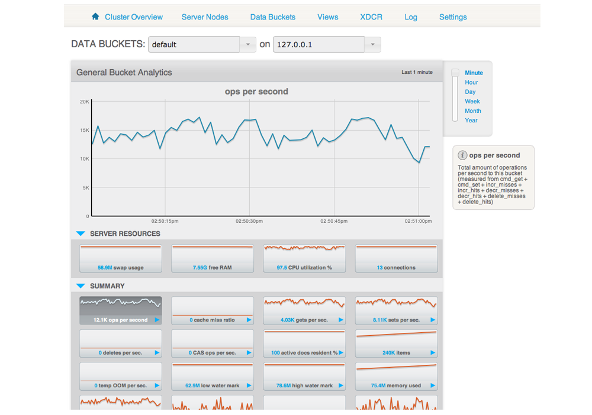

Server Nodes
The Server Nodes section shows statistics across the server nodes in the cluster.
In addition to monitoring buckets over all the nodes within the cluster, Couchbase Server also includes support for monitoring the statistics for an individual node.
The Server Nodes monitoring overview shows summary data for the Swap Usage, RAM Usage, CPU Usage and Active Items across all the nodes in your cluster.

Clicking the triangle next to a server displays server node specific information, including the IP address, OS, Couchbase version and Memory and Disk allocation information.

The detail display shows the following information:
- Node information
- Server Name - The server IP address and port number used to communicated with this sever.
- Uptime - The uptime of the Couchbase Server process. This displays how long Couchbase Server has been running as a node, not the uptime for the server.
- OS - The operating system identifier, showing the platform, environment, operating system and operating system derivative.
- Version - The version number of the Couchbase Server installed and running on this node.
- Memory cache
The Memory Cache section shows you the information about memory usage, both for Couchbase Server and for the server as a whole. You can use this to compare RAM usage within Couchbase Server to the overall available RAM. The specific details tracked are:
- Couchbase Quota - Shows the amount of RAM in the server allocated specifically to Couchbase Server.
- In Use - Shows the amount of RAM currently in use by stored data by Couchbase Server.
- Other Data - Shows the RAM used by other processes on the server.
- Free - Shows the amount of free RAM out of the total RAM available on the server.
- Total - Shows the total amount of free RAM on the server available for all processes.
- Disk Storage
This section displays the amount of disk storage available and configured for Couchbase. Information will be displayed for each configured disk.
- In Use - Shows the amount of disk space currently used to stored data for Couchbase Server.
- Other Data - Shows the disk space used by other files on the configured device, not controlled by Couchbase Server.
- Free - Shows the amount of free disk storage on the server out of the total disk space available.
- Total - Shows the total disk size for the configured storage device.
Selecting a server from the list shows the server-specific version of the Bucket Monitoring overview, showing server-specific performance information.
The graphs specific to the server are:
- swap usage - Amount of swap space in use on this server.
- free RAM - Amount of RAM available on this server.
- CPU utilization - Percentage of CPU utilized across all cores on the selected server.
- connection count - Number of connections to this server of all types for client, proxy, TAP requests and internal statistics.
By clicking on the blue triangle against an individual statistic within the server monitoring display, you can optionally select to view the information for a specific bucket-statistic on an individual server, instead of across the entire cluster.

Understanding server states
Couchbase Server nodes can be in a number of different states depending on their current activity and availability. The displayed states are:
- Up
Host is up, replicating data between nodes and servicing requests from clients.
- Down
Host is down, not replicating data between nodes and not servicing requests from clients.

- Pend
Host is up and currently filling RAM with data, but is not servicing requests from clients. Client access will be supported once the RAM has been pre-filled with information.

You can monitor the current server status using both the Manage: Server Nodes and Monitor: Server Nodes screens within the Web Console.